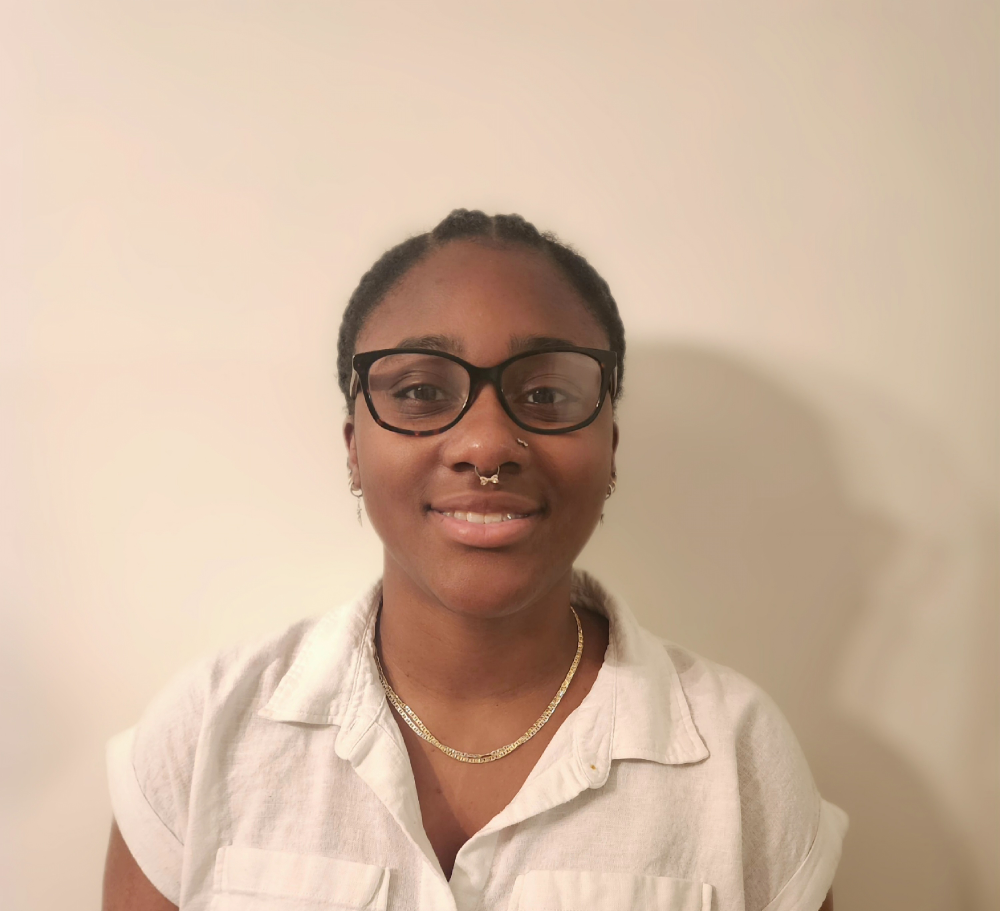

About Me
Hi, my name is Jakaiya Black and I’m a student studying Computer Information Systems. I’m interested in going into cybersecurity or network security because I like the idea of protecting systems and learning how security works.
Right now, I’m learning how to build websites using HTML and CSS. I currently attend George Corley Wallace State Community College in Selma, and I plan to enlist in the Air Force Reserve while continuing my education at Tennessee State University, where I want to double major in Computer Science and Communications. My goal is to eventually work in a corporate tech career.
Outside of school, I enjoy art, drawing, painting, photography, poetry, music, and sports. I feel like being creative helps me think differently and makes me a better tech student. The project I’m most proud of so far is this website because it shows my progress. If someone visits my site, I want them to see me as creative, disciplined, and professional.
